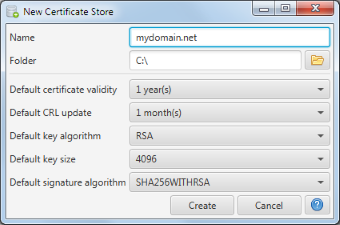

New Certificate Store/Edit Certificate Store Options
This dialog is either used to enter the store options during store creation or to edit the store options afterwards.

Name and folder input define the actual name and location of the store. Folder has to point to an existing directory.
The store is created as an sub-directory inside this directory using the store name. Hence store name must be
a valid directory name. Both fields cannot be changed from within the application afterwards. This can be
achieved by simply renaming/moving the store folder from within your file manager.
The other option define the defaults used in the application during certificate generation and the like. The
defaults can be changed via this dialog as well in the actual certificate operation by overwriting the defaults.